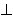

Formula:
Legend
F -  - T -  -
- - - * - + - C - C(T1, T2)<= - ≤ - & -  -
- | -  -
- ~ -  -
- -> - <-> -
Formula Filters:
Convert Contacts in <=
Split Disjunctions in Atomic Formulas
Reduce Contacts
Reduce Atomic Formulas with Contacts
Remove Double Negations
Convert Contacts in <=
Split Disjunctions in Atomic Formulas
Reduce Contacts
Reduce Atomic Formulas with Contacts
Remove Double Negations
If the calculation takes too long, try to cancel it and it might help to optimize the input formula